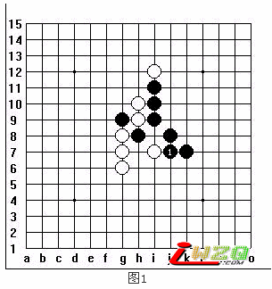

实战对局中的线位分析问题
#1 实战对局中的线位分析问题 作者：有志青年 发表时间：2007-4-25 8:39:27

图1，是一个妖刀的实战对局的图谱，黑1后，来做一个盘面分析，看上图中的黑棋形势，黑已经彻底的丧失了先手优势，而黑1则成了被动性防守的标志。
通常在这种形势出现的时候，攻守双方的形势也就发生了变化，对先前防守的一方来说，当进攻方出现被动性防守的时候，也是自己由防守转为进攻的上好契机。在平时我看很多初学五子棋的朋友下棋的时候，发现有一个比较普遍性的通病，就是一但当这个契机来临的时候，并不能很好的去把握这个机会来认真的分析一下大盘形势，而是比较草率的依据自己的感觉很随意的就去落子了。
对局中的形势瞬息之中千变万化，把握不住机会的人就是失败的人！
针对图1来说，可以肯定的一点是白必胜，但不经过分析和判断随意的走棋，我们也可以说是白必输，看下边的图2：
图2，白2不加任何分析的在G5点冲4，黑3断后，白没有任何后续手的接应，于是大好的形势，必赢的棋型瞬间丢掉了，自己又只好被迫进入防守，行之黑15手，黑胜定！这就是白必输的理由！不加思考凭感觉走棋，这一现象在初级棋手下棋的过程中，是一个相当普遍存在着的现象，几乎是所有初学者的通病。
一般来说，在一盘对局中，通常会出现一次或几次比较有标志性的攻防转换棋着，比如图一中的黑1，就是黑棋从进攻进入防守的一个典型的标志，相反也是白棋从防守转入进攻的标志，在五子棋中同样有“作用力和反作用力”的力学观点存在，进攻的力道越强，防守的力道就越弱，防守的力道越强，进攻的力道就越弱。在我以前的文章中已经阐述过五子棋中“力”的概念，这里不再赘述。
通常情况下，一盘棋中能给予你的机会并不多，所以当这个机会来临的时候，应该好好的去把握，在有效的时间内，应该尽量的合理安排时间，不要害怕思考会浪费掉你的时间，毕竟“磨刀不误砍柴工”思路清晰了，后边的走法也就成熟了。看下图：
图3中的红点是白棋左下角后势发展所能形成的直接联系点，红线表示这些点可能形成的交叉位置，图中可以清晰的看到，在后势发展的点产生的A线上可以形成交叉！在实际对战中，我们至少应该要能看到图中所给出的相关的线和点的位置上，因为这些都是后面形势中将可能出现的相互关联点和线。所以我们说白必杀了，因为黑1后，你就拥有了先手权利。可以转为进攻，并且盘面上的棋型已经具备了进攻的条件：
根据图2中的线位分析,我们知道,如果白2冲4在G5位置,后边和其他线位是无法形成呼应的,但当白2跳冲4在g4位后,就可以了,所以白2选择跳冲4，黑3应，白4做棋后，黑必然要防守，因为接下来的白按a、b、c的手顺下出来的是一个vcf
假如黑应a点：
则白有如下胜法：
白10后四三胜定！
备注：这个局简单的不能再简单了，也没什么看头，但有一个道理在里边，所以我还是用这个对局作为一个例子，有时候简单的往往也是最有效的。
我个人的观点认为，对棋的分析，不能单纯的凭借这盘棋下的是不是有水平来衡量，而应该看它能否给我们指出一个什么样的棋理。世界经典对局中也有败着的存在，一个平庸的选手，也有走出妙手的时候，比如这个对局中的图2所阐述的问题，不光是初学者经常犯的错误，在有相当一定水平的棋手中也是经常出现的错误，其实这也是一个不良习惯的问题。
对局中的每一步都应该深思熟虑，凭借我个人的心得，我还认为有几种情况下更应该用心去思考：
1、 当形势步入僵局（蒸笼局）的时候；
理由：充分分析形式，有利于寻找突破口。
2、 自己认为“好象能赢”的时候；
理由：能够更合理的判断是否真实存在胜算和正确的行棋路线及手顺。
3、 自己认为“好象输了”的时候；
理由：且莫说到了黄昏，这一天就过去了，有时候奇迹也会在黄昏出现。
4、 需要做攻防转换的时候；
理由：选择合理的转换方法，找准最佳的选点。
5、 自认为“某一个机会来临”的时候；
理由：充分分析形式有利于判断对方是否在行骗着。
#2 Re:实战对局中的线位分析问题 作者：news 发表时间：2007-5-8 16:21:56
天元子的BLOG做的很不错。技术性很强，是个好人哈~#3 Re:实战对局中的线位分析问题 作者：xr__ 发表时间：2007-7-9 15:12:08
是啊，这才叫 “传道、授业、解惑”我们称之为 师。
#4 Re:实战对局中的线位分析问题 作者：啥呀 发表时间：2010-1-19 20:03:59
恩恩，是啊是啊。受益呢。
不过我刚才想的第一步是在F7做VCF...这样是不是会对g线上白的冲棋有损害？